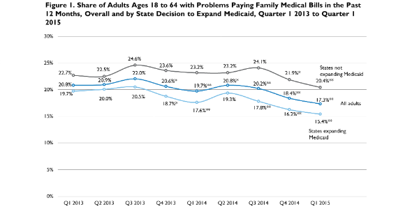

|  |
|
||
9.4 Million Fewer Families Are Having Problems Paying Medical Bills
Michael Karpman and Sharon K. LongMay 21, 2015
Federal and nonfederal survey data show strong gains in health insurance coverage following implementation of key provisions of the Affordable Care Act (ACA) in 2014 and early 2015 (Carman and Eibner 2014; Collins, Rasmussen, and Doty 2014; Long et al. 2015; Martinez and Cohen 2015; Office of the Assistant Secretary for Planning and Evaluation 2015).1 Research comparing Medicaid enrollees with uninsured adults suggests that these coverage gains will increase access to and reduce the costs of health care for those who have gained coverage (Baicker et al. 2013; Coughlin et al. 2013; Finkelstein et al. 2012; Long et al. 2012). Early evidence on changes under the ACA supports this expectation, with a declining share of nonelderly adults reporting that their families had problems paying medical bills between 2012 and 2014 (Cohen 2015; Collins et al. 2015).
In this brief, we build on our analyses of changes in health insurance coverage under the ACA using the Urban Institute’s Health Reform Monitoring Survey (HRMS; Long et al. 2015) and those early studies of changes in the burden of health care costs to examine changes in health care affordability under the ACA through March 2015. We also highlight gaps in the financial protection against medical bills provided by insurance coverage and explore the characteristics and health care challenges of those who have problems paying medical bills.
What We Did
This brief draws on data collected from the HRMS between the first quarter of 2013 and the first quarter of 2015. In each quarter, we ask our sample of nonelderly adults (ages 18 to 64) a question adapted from the National Health Interview Survey about whether they or anyone in their families had problems paying or were unable to pay medical bills in the past 12 months. We refer to adults who report such problems as adults with problems paying family medical bills.
We focus on estimated changes in the share of adults reporting that they or someone in their families had problems paying medical bills between September 2013, just before the ACA’s first Marketplace open enrollment period, and March 2015, just after the second open enrollment period ended. We show trends in problems paying medical bills for all nonelderly adults and for adults by state Medicaid expansion status as of March 2015.2 Following our analysis of changes over time in the share of adults with problems paying family medical bills, we draw on the March 2015 HRMS data to explore the prevalence of problems paying family medical bills among different demographic and socioeconomic subgroups, among uninsured adults, and among adults with high-deductible health plans. We also examine the extent of unmet need for health care because of concerns about affordability among adults who have problems paying family medical bills.
Each round of the HRMS is weighted to be nationally representative. We use these weights and regression adjustment to control for differences in the demographic and socioeconomic characteristics of the respondents across the different rounds of the survey.3 We focus on statistically significant changes in problems paying family medical bills over time (defined as changes relative to September 2013 that are significantly different from zero at the 5 percent level or lower), and provide a 95 percent confidence interval (CI) for key estimates. To extrapolate our estimates from the survey to the overall population, we use projections for the size of the 2015 population from the US Census Bureau.4 Although the estimated changes coincide with the implementation of ACA coverage expansions, we are not attempting to disentangle the changes in health care affordability resulting from coverage gains under the ACA from the changes caused by other factors that affect affordability, including those related to the business cycle.
What We Found
The share of adults with problems paying family medical bills fell 21.3 percent between September 2013 and March 2015.
In March 2015, 17.3 percent of adults had problems paying family medical bills, down from 22.0 percent in September 2013, for a decline of 21.3 percent (figure 1).5 Applying the estimated 4.7 percentage-point (95% CI [3.3, 6.1]) decrease in the share with problems paying medical bills to the estimated national population of nonelderly adults yields an estimated decline of 9.4 million (95% CI [6.6 million, 12.2 million]) adults with problems paying family medical bills between September 2013, just before the rollout of the Medicaid expansions and the Marketplace, and March 2015.
There were gains in health care affordability for adults in both Medicaid expansion and nonexpansion states. As shown, the share of adults in Medicaid expansion states with problems paying family medical bills fell 5.1 percentage points (95% CI [3.5, 6.7]), from 20.5 percent to 15.4 percent, while the share of adults with problems paying family medical bills in nonexpansion states fell 4.2 percentage points (95% CI [1.4, 6.9]), from 24.6 percent to 20.4 percent.
Adults are more likely to have problems paying medical bills if they have low incomes, are uninsured or have a high-deductible health plan, or have higher health care needs because of fair or poor health.
Adults were also more likely to have problems paying family medical bills if they had low incomes or had more significant health care needs. For instance, 24.2 percent of adults with incomes at or below 138 percent of the federal poverty level (FPL) had problems with medical bills, compared with 14.4 percent of adults with incomes above that threshold. Nearly one-third (30.7 percent) of adults reporting that they were in fair or poor health had problems with medical bills, as opposed to 14.9 percent of other adults.
Among full-year insured adults, higher deductibles under their health plans are associated with more frequent problems paying family medical bills (figure 3). Only 12.3 percent of full-year insured adults with health plans without a deductible reported problems paying family medical bills, compared with almost one in five adults with a health plan that has a deductible of $3,000 or more.
Adults with problems paying family medical bills are much more likely than other adults to forgo needed health care because they cannot afford it.
Though adults who struggle to pay family medical bills may respond by incurring debt, reducing spending on other needs, or drawing down savings, HRMS data show that a large proportion of these adults go without needed health care because they cannot afford it. As shown in figure 4, nearly three in four adults (73.8 percent) with problems paying family medical bills reported an unmet need for at least one of seven types of health care services because they could not afford it, compared with less than one-quarter of adults (23.2 percent) who did not have problems paying family medical bills. Adults with medical bill problems were most likely to go without dental care or prescription drugs because they could not afford it.6
What It Means
The share of adults with problems paying family medical bills in the previous 12 months fell an estimated 4.7 percentage points between September 2013 and March 2015. Overall, an estimated 9.4 million fewer adults had problems paying family medical bills over the previous year in March 2015 than did in September 2013. However, identifying the extent to which the decline in medical bill problems was the result of coverage gains rather than other factors such as the improving economy is beyond the scope of this policy brief.
Though adults who maintain continuous health insurance coverage are much less likely to have problems paying family medical bills than those with spells of uninsurance, our results show that insurance coverage leaves gaps in financial protection from medical bills for many adults. Among adults who maintain continuous coverage for a full year, problems with medical bills are more prevalent for those with higher annual per-person health plan deductible amounts. A recent study shows that 76 percent of nonelderly, nonpoor households with private insurance have sufficient liquid financial assets to cover a midrange single deductible of $1,200 or family deductible of $2,400 (Claxton, Rae, and Panchal 2015).
Since 2006, health plan deductibles have risen steadily for adults with employer-sponsored insurance, with 18 percent of covered workers enrolled in health plans with deductibles of $2,000 or more as of 2014 (Claxton et al. 2014). High deductibles are also common among the most popular plans in the health insurance Marketplaces. For example, the average single coverage, silver plan deductible for a 40-year-old nonsmoker is nearly $3,000 (Gabel et al. 2014). ACA provisions that reduce deductibles and other out-of-pocket cost burdens, such as cost-sharing reductions for silver plans purchased by those with incomes up to 250 percent of FPL, are likely to mitigate the burden of family medical bills.
Beyond the financial burden associated with problems paying medical bills, we find that nearly three-quarters of the adults who have problems paying family medical bills forgo needed health care because they cannot afford it. Expansions of health insurance coverage under the ACA are likely to reduce but not eliminate problems with the affordability of health care, while ACA policies designed to limit cost sharing may expand access to care that would otherwise be viewed as unaffordable.
References
Baicker, Katherine, Sarah L. Taubman, Heidi L. Allen, Mira Bernstein, Jonathan H. Gruber, Joseph P. Newhouse, Eric C. Schneider, Bill J. Wright, Alan M. Zaslavsky, Amy Finkelstein, and the Oregon Health Study Group. 2013. “The Oregon Experiment – Effects of Medicaid on Clinical Outcomes.” New England Journal of Medicine 368 (18): 1713–22.
Carman, Katherine Grace, and Christine Eibner. 2014. Changes in Health Insurance Enrollment since 2013. Santa Monica, CA: RAND Corporation.
Claxton, Gary, Matthew Rae, and Nirmita Panchal. 2015. Consumer Assets and Patient Cost Sharing. Menlo Park, CA: Kaiser Family Foundation.
Claxton, Gary, Matthew Rae, Nirmita Panchal, Anthony Damico, Heidi Whitmore, Nathan Bostick, and Kevin Kenward. 2014. Employer Health Benefits 2014 Annual Survey. Menlo Park, CA and Chicago, IL: Kaiser Family Foundation and Health Research and Educational Trust.
Cohen, Robin A. 2015. Problems Paying Medical Bills Among Persons under Age 65: Early Release of Estimates from the National Health Interview Survey, 2011-June 2014. Hyattsville, MD: National Center for Health Statistics.
Collins, Sara R., Petra W. Rasmussen, and Michelle M. Doty. 2014. Gaining Ground: Americans' Health Insurance Coverage and Access to Care after the Affordable Care Act's First Open Enrollment Period. New York: The Commonwealth Fund.
Collins, Sara R., Petra W. Rasmussen, Michelle M. Doty, and Sophie Beutel. 2015. The Rise in Health Care Coverage and Affordability since Health Reform Took Effect. New York: The Commonwealth Fund.
Coughlin, Teresa A., Sharon K. Long, Lisa Clemans-Cope, and Dean Resnick. 2013. What Difference Does Medicaid Make? Menlo Park, CA: Kaiser Family Foundation.
Finkelstein, Amy, Sarah Taubman, Mira Bernstein, Jonathan Gruber, Joseph P. Newhouse, Heidi Allen, Katherine Baicker, and the Oregon Health Study Group. 2012. “The Oregon Health Insurance Experiment: Evidence from the First Year.” Quarterly Journal of Economics 127 (3): 1057–1106.
Gabel, Jon R., Heidi Whitmore, Sam Stromberg, Matthew Green, Daniel S. Weinstein, and Rebecca Oran. 2014. Analysis Finds No Nationwide Increase in Health Insurance Marketplace Premiums. New York: The Commonwealth Fund.
Long, Sharon K., Karen Stockley, Elaine Grimm, and Christine Coyer. 2012. National Findings on Access to Health Care and Service Use for Nonelderly Adults Enrolled in Medicaid. MACPAC Contractor Report No. 2.
Long, Sharon K., Michael Karpman, Genevieve M. Kenney, Stephen Zuckerman, Douglas Wissoker, Adele Shartzer, Nathaniel Anderson, and Katherine Hempstead. 2015. Taking Stock: Gains in Health Insurance Coverage under the ACA as of March 2015. Washington, DC: Urban Institute.
Martinez, Michael E., and Robin A. Cohen. 2015. Health Insurance Coverage: Early Release of Estimates from the National Health Interview Survey, January–September 2014. Hyattsville, MD: National Center for Health Statistics.
Office of the Assistant Secretary for Planning and Evaluation. 2015. Health Insurance Coverage and the Affordable Care Act. Washington, DC: US Department of Health and Human Services.
About the Series
This brief is part of a series drawing on the HRMS, a quarterly survey of the nonelderly population that is exploring the value of cutting-edge Internet-based survey methods to monitor the ACA before data from federal government surveys are available. The briefs provide information on health insurance coverage, access to and use of health care, health care affordability, and self-reported health status, as well as timely data on important implementation issues under the ACA. Funding for the core HRMS is provided by the Robert Wood Johnson Foundation and the Urban Institute.
For more information on the HRMS and for other briefs in this series, visit www.urban.org/hrms.
About the Authors
Michael Karpman is a research associate and Sharon K. Long is a senior fellow in the Urban Institute’s Health Policy Center.
Notes 1 Jenna Levy, “In U.S., Uninsured Rate Dips to 11.9% in First Quarter,” Gallup, April 13, 2015. 2 The list of states that have expanded Medicaid is increasing over time as more states decide to implement the ACA expansion. States that expanded Medicaid by March 1, 2015, are AZ, AR, CA, CO, CT, DE, DC, HI, IL, IN, IA, KY, MD, MA, MI, MN, NH, NV, NJ, NM, NY, ND, OH, OR, PA, RI, VT, WA, and WV. Several of those states, including CA, CT, DC, and MN, expanded Medicaid under the ACA before 2013. 3 We control for the variables used in the poststratification weighting of the KnowledgePanel (the Internet-based survey panel that underlies the HRMS) and the poststratification weighting of the HRMS. These variables are sex, age, race and ethnicity, language, education, marital status, whether any children are present in the household, household income, family income as a percentage of FPL, homeownership status, Internet access, urban or rural status, and census region. We also control for citizenship status and participation in the previous quarter’s survey (i.e., whether the respondent completed the survey in the previous quarter, was sampled in the previous quarter but did not complete the survey, or was not sampled in the previous quarter). The basic patterns shown for the regression-adjusted measures are similar to those based solely on simple weighted estimates. In presenting the regression-adjusted estimates, we use the predicted share with problems paying family medical bills in each quarter for the same nationally representative population. For this analysis, we base the nationally representative sample on survey respondents from the most recent 12-month period from the HRMS (i.e., quarter 1 of 2015 and quarters 2–4 of 2014). 4 We use projections for the size of the 2015 population from the US Census Bureau. These files give population projections by race, ethnicity, and sex of all ages from 2014 to 2060 based on estimated birth rates, death rates, and net migration rates. Using the “Table 1” file (which has a 2015 projected population of 321,368,864), we summed the 2015 population projections for all 18-to-64-year-olds to arrive at 199,903,264 nonelderly adults in 2015. See US Census Bureau, “2014 National Population Projections: Downloadable Files,” US Department of Commerce, last modified December 10, 2014. 5 Because of the relatively high estimated share of adults in families with problems paying medical bills in quarter 3 2013, we also tested the significance of differences in estimates for quarter 1 2015 relative to quarter 1 2013. The differences were significant for all nonelderly adults, adults in Medicaid expansion states, and adults in Medicaid nonexpansion states. 6 While this analysis focuses on all adults in the sample, similar patterns emerge if the sample is limited to the full-year insured.
|

 |
 |
 |